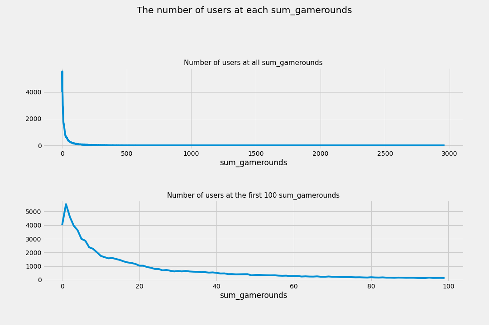
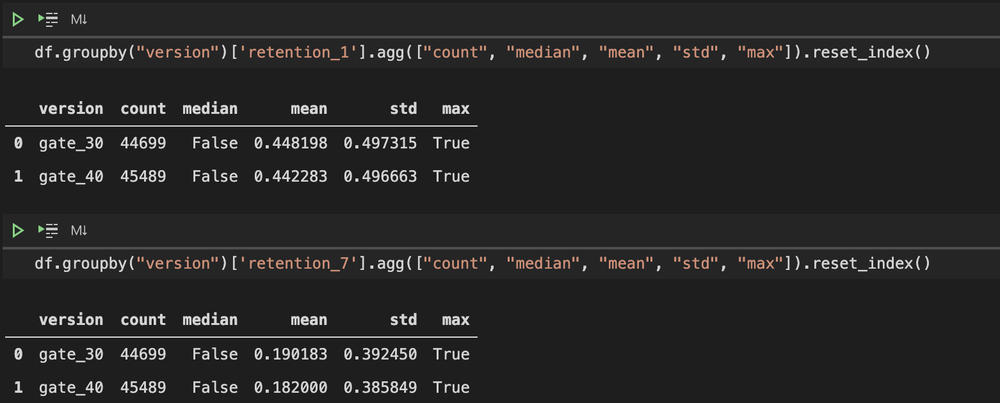
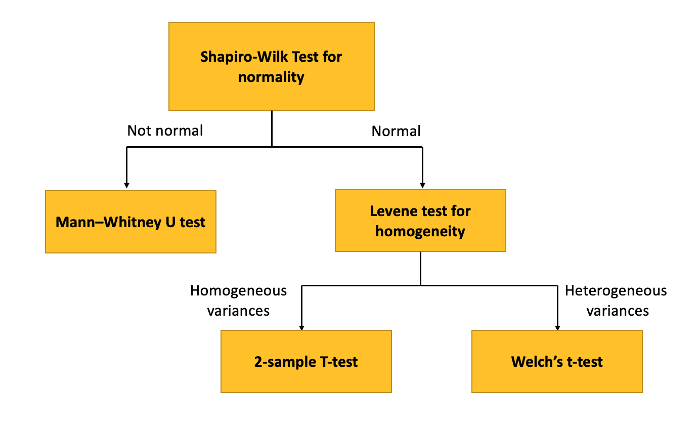
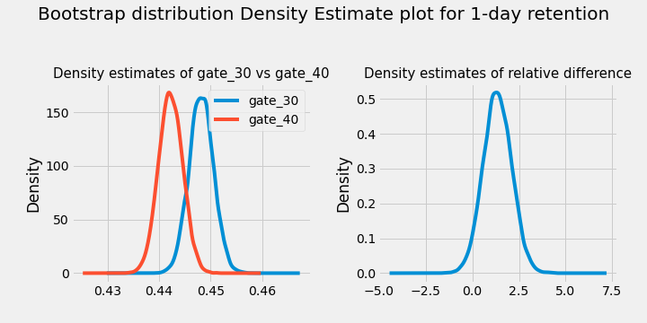
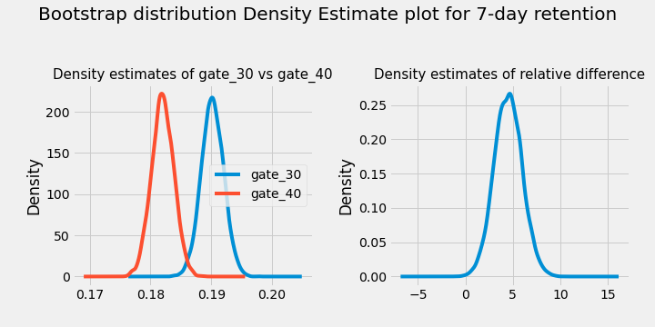
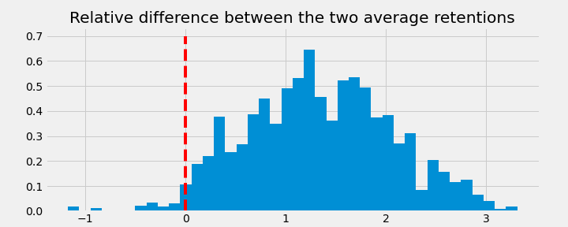
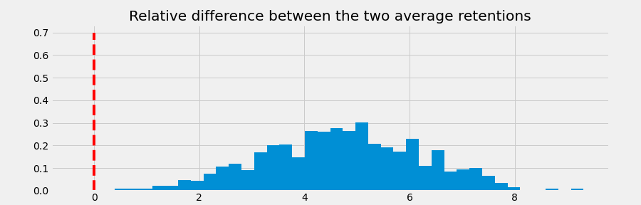

🚧 Under Construction 🚧
Technologies:
scipy.stats for hypothesis testing.PyMC3 for Bayesian statistical modelingCookie Cats is a popular mobile puzzle game developed by Tactile Games. This is a classic game where you need to connect three pieces of puzzle of the same type to clear a board and score points.
As players move to higher level, they will see gates that ask them to either wait for a period of time, or make an in-app purchase to progress. In this project, I am interested in performing an A/B test to understand the effect of moving the first gate from level 30 to level 40 on player 1-day and 7-day retention.
Retention is important, as in order to invite players to make in-app purchases at later rounds for monetization, we must first retain players.
While the number of games played is another important feature, I will not test for it in this project.
The project can be deemed successful if:
The dataset contains 90,189 players that installed the game while the A/B test took place. The features are as follows:
userid: player unique identificationversion: whether the player is placed in the control group (gate_30; the first gate is placed at level 30) or the test group (gate_40; the first gate is placed at level 40).sum_gamerounds: the number of game rounds played by the player during the first week after installationretention_1: 1-day retention of player after installationretention_7: 7-day retention of player after installationNumber of games played

sum_gamerounds == 1. 5538 users only play 1 game.This points to a significant churn problem. These are a few recommendations:
Note: There are 3,994 users who installed the game but never played. It is odd that around 20% of these users have retention_1 as TRUE. A data quality check is needed.
Retention
1-day and 7-day retention are not very different between two groups. The difference is bigger for 7-day retention.
The notable thing to point out is that both 1-day and 7-day retention are higher for Gate 30 compared to Gate 40.

While the difference in retention_1d and retention_7d between gate_30 and gate_40 is very small, it can make a big difference when we look at millions of players if the game is grow in the future.
I would like to understand whether the difference is significant. Before A/B testing, I will use bootstrapping: I will re-sample the dataset with replacement for 10,000 times, and calculate 1-day and 7-day retention for those samples.
This will give me an idea of how confident I should be about the difference between gate_30 and gate_40.
The general procedure to set up an experiment and perform an A/B test is as follows (step 3-6 are already taken care of).
Hypothesis Testing Procedure:

In this project, I will also carry out a Bayesian A/B test using the PyMC3 package.
After bootstrapping, it seems like moving from gate_30 to gate_40 indeed lower 1-day and 7-day retention.
The probability that 1-day retention is greater when the gate is at level 30 is 96.23%.

The probability that 7-day retention is greater when the gate is at level 30 is 99.9%.

For both 1-day and 7-day retention, I first performed the Shapiro-Wilk test to see if the distribution is normal.
Shapiro-Wilk Test for normality
H_0: The null hypothesis for this test is that the data are normally distributed.H_A: The alternative hypothesis is that the data is not normally distributed.If the chosen alpha level is 0.05 and the p-value is less than 0.05, then the null hypothesis that the data are normally distributed is rejected. If the p-value is greater than 0.05, then the null hypothesis is not rejected.
In our case, both the control group (gate_30) and the treatment group (gate_40) are not normally distributed as the p-values are both less than 0.05. Therefore, we will go with the Mann–Whitney instead of a standard t-test.
The Mann–Whitney U test (also called the Mann–Whitney–Wilcoxon (MWW), Wilcoxon rank-sum test, or Wilcoxon–Mann–Whitney test) is a nonparametric test:
H_0: null hypothesis that, for randomly selected values X and Y from two populations, the probability of X being greater than Y is equal to the probability of Y being greater than X.H_A: alternative hypothesis that, for randomly selected values X and Y from two populations, the probability of X being greater than Y is not equal to the probability of Y being greater than X.In our case, p-value < 0.05, we reject the null hypothesis and the difference between the control and the treatment group is statistically significant. It means that moving the gate from level 30 to level 40 actually lower both retention levels (1-day and 7-day).
From the below observations, we have a 95.7% confidence that the retention for Gate 30 is greater than 40 for 1 day.

From the below observations, we have a 99.9% confidence that the retention for Gate 30 is greater than 40 for 7 days.

We observed that placing the gate at Level 30 brought greater retention for both the 1 and 7 days retention.